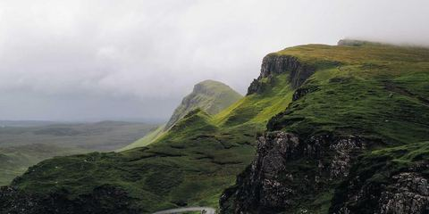
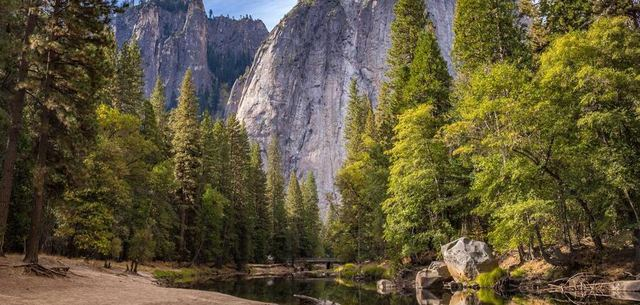
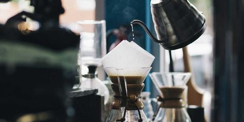

Fjord light, wet granite, and a rented car that started on the third try. Most of these were shot between four and six in the morning, when the water goes completely still.



Field Notes is a running journal of places that took longer to reach than expected. Everything here is shot on a 35mm body I have dropped twice and a phone I keep losing.
Prints are made to order in batches of twenty. If you would like one of these frames on a wall, the shop opens again in January.